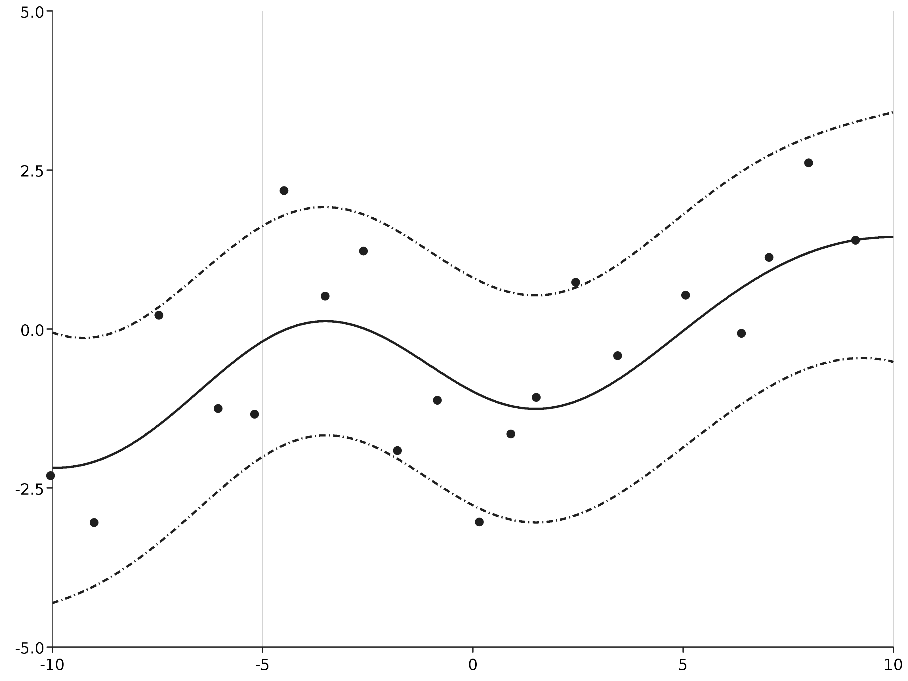

Given values of the hyper parameters of the covariance and mean functions. Then we can determine the posterior distribution of the function (y \approx f(x)) given paired data ((x, y)) where (x) is in the domain of the function. Typically, (x) will be a location or time and (y) is a process we want to learn about.
For a continuous outcome, (y) the likelihood and prior is Gaussian, resulting in a posterior distribution which is also Gaussian and can be derived exactly. Given a location with an unknown measurement, (y(x^\star)), then the posterior is Gaussian and can be determined analytically by calculating the mean and variance:
Suppose that we want to determine the posterior distribution of the function (f(x)) by observing finitely many points from the using the same parameters, distance and covariance function used in the GP introduction. This can be simulated by specifying the parameters and a distance function:
scala> import com.github.jonnylaw.gp._
import com.github.jonnylaw.gp._
scala> val params = GaussianProcess.Parameters(
| MeanParameters.zero,
| Vector(KernelParameters.se(3.0, 5.5), KernelParameters.white(1.0))
| )
params: com.github.jonnylaw.gp.GaussianProcess.Parameters = Parameters(Zero,Vector(SquaredExp(3.0,5.5), White(1.0)))
scala> val dist = Location.euclidean _
dist: (com.github.jonnylaw.gp.Location[Double], com.github.jonnylaw.gp.Location[Double]) => Double = $$Lambda$5190/1743441895@539611ff
scala> val xs = GaussianProcess.samplePoints(-10.0, 10.0, 300).map(One.apply)
xs: scala.collection.immutable.Vector[com.github.jonnylaw.gp.One[Double]] = Vector(One(-9.967915314213185), One(-9.852122040163533), One(-9.846562824488307), One(-9.811860826755838), One(-9.79553863952705), One(-9.725947564262896), One(-9.618544004965294), One(-9.564478800192152), One(-9.540759573956636), One(-9.481041766245246), One(-9.31802449596217), One(-9.290934814949834), One(-9.230515859529064), One(-9.108925192710613), One(-8.998330647371912), One(-8.96149904559358), One(-8.843318323833564), One(-8.806310154266633), One(-8.535112441244106), One(-8.508232413838584), One(-8.415806949748736), One(-8.265578331634744), One(-8.207437342272579), One(-8.142552220445797), One(-8.082522198588222), One(-8.073136910802932), One(-7.952590324250162), One(-7.713409798434641), One(-7.6504121266...
scala> val ys = GaussianProcess.draw(xs, dist, params)
ys: breeze.linalg.DenseVector[Double] = DenseVector(0.7433520172854472, -0.054697544160708156, 1.6946416064724044, 2.019920023913105, 0.7849251063581465, 1.1762835345645508, 1.6988467703817336, 1.696491442995839, 1.2828974283371333, 0.9511930192135727, 2.4611505522102592, 0.7093527705437255, 0.024623911848679514, 1.5218657121217594, 0.5224387708965093, -0.35549493538704, 1.4394879221373602, 1.2062842014718511, 0.9745216632296254, -1.4073345009023606, 0.39292707478770916, 2.2931070534423945, 0.2008048190979037, 0.19949630038640853, -0.39715491227604616, -0.24946270656707248, 0.6513355192004084, -0.35066012703574434, -0.12375471685322359, 0.1989694002121991, 0.9671851276537069, 0.1332007939524611, 0.08019417747366497, -0.26369332668333056, -0.20243740502769403, -0.6618572416176498, 0.1186...
Then observing only every 15th point:
scala> val observed = GaussianProcess.vecToData(ys, xs).
| zipWithIndex.
| filter { case (_, i) => (i + 1) % 15 == 0 }.
| map(_._1)
observed: scala.collection.immutable.Vector[com.github.jonnylaw.gp.GaussianProcess.Data] = Vector(Data(One(-8.998330647371912),0.5224387708965093), Data(One(-7.576418317081068),0.1989694002121991), Data(One(-6.35327374059786),-2.732149444869755), Data(One(-5.439654944131775),-2.279139405163915), Data(One(-4.678378160551895),-1.6131792186559035), Data(One(-3.636485681349768),-0.7991246199704363), Data(One(-2.406247556429282),-3.786696020033533), Data(One(-1.784043317945244),-2.804244879921643), Data(One(-1.0309288421071638),-3.0057463080663167), Data(One(-0.13949260242330652),-4.911637205804352), Data(One(0.9560110432828637),-5.676405636832517), Data(One(1.815898727619114),-5.3048544272384035), Data(One(3.0324367340610703),-6.803277343321658), Data(One(3.712218812701021),-2.7297870548735...
In order to determine the posterior distribution of the function, we specify a list of test-points which are in the same domain as the function and calculate the posterior mean and variance given the observed data:
scala> implicit val integralD = scala.math.Numeric.DoubleAsIfIntegral
integralD: math.Numeric.DoubleAsIfIntegral.type = scala.math.Numeric$DoubleAsIfIntegral$@4d8126f
scala> val testPoints = Vector.range(-10.0, 10.0, 0.01).map(One(_))
testPoints: scala.collection.immutable.Vector[com.github.jonnylaw.gp.One[Double]] = Vector(One(-10.0), One(-9.99), One(-9.98), One(-9.97), One(-9.96), One(-9.950000000000001), One(-9.940000000000001), One(-9.930000000000001), One(-9.920000000000002), One(-9.910000000000002), One(-9.900000000000002), One(-9.890000000000002), One(-9.880000000000003), One(-9.870000000000003), One(-9.860000000000003), One(-9.850000000000003), One(-9.840000000000003), One(-9.830000000000004), One(-9.820000000000004), One(-9.810000000000004), One(-9.800000000000004), One(-9.790000000000004), One(-9.780000000000005), One(-9.770000000000005), One(-9.760000000000005), One(-9.750000000000005), One(-9.740000000000006), One(-9.730000000000006), One(-9.720000000000006), One(-9.710000000000006), One(-9.70000000000000...
scala> val fitted = Predict.fit(testPoints, observed, dist,
| params)
fitted: Vector[(com.github.jonnylaw.gp.Location[Double], breeze.stats.distributions.Gaussian)] = Vector((One(-10.0),Gaussian(0.2888632763606468, 1.3297097094833674)), (One(-9.99),Gaussian(0.2858184685087887, 1.3283516671466642)), (One(-9.98),Gaussian(0.2827633552162508, 1.3269972038207203)), (One(-9.97),Gaussian(0.2796979798434087, 1.3256463428440348)), (One(-9.96),Gaussian(0.2766223860398356, 1.3242991073769395)), (One(-9.950000000000001),Gaussian(0.27353661774249005, 1.3229555203998116)), (One(-9.940000000000001),Gaussian(0.27044071917388246, 1.3216156047113197)), (One(-9.930000000000001),Gaussian(0.2673347348402224, 1.3202793829266672)), (One(-9.920000000000002),Gaussian(0.2642187095295445, 1.318946877475858)), (One(-9.910000000000002),Gaussian(0.26109268830981597, 1.3176181106019735...
This calculates the mean and covariance at each of the test points. This can be used to determine posterior probability intervals for the function which can then be plotted:
scala> import com.cibo.evilplot.plot.aesthetics.DefaultTheme._
import com.cibo.evilplot.plot.aesthetics.DefaultTheme._
scala> com.cibo.evilplot.plot.Overlay(
| Plot.gpPlot(fitted),
| Plot.scatterPlot(observed)).
| render().
| write(new java.io.File("docs/src/main/resources/figures/fitted_gp.png"))
